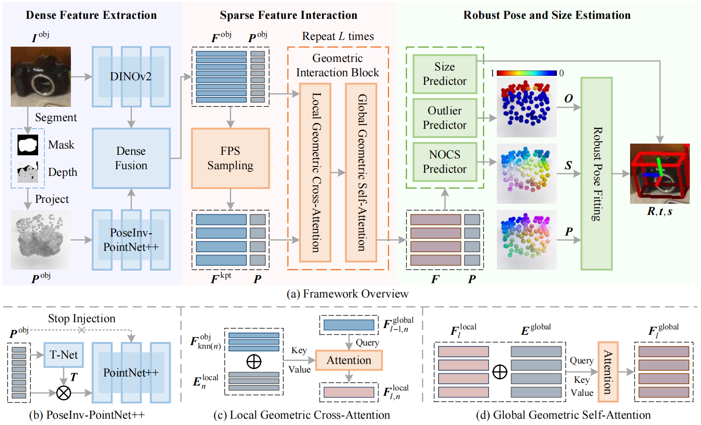
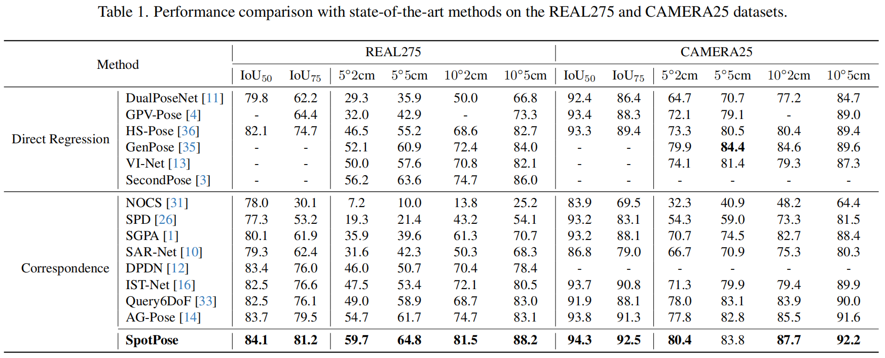
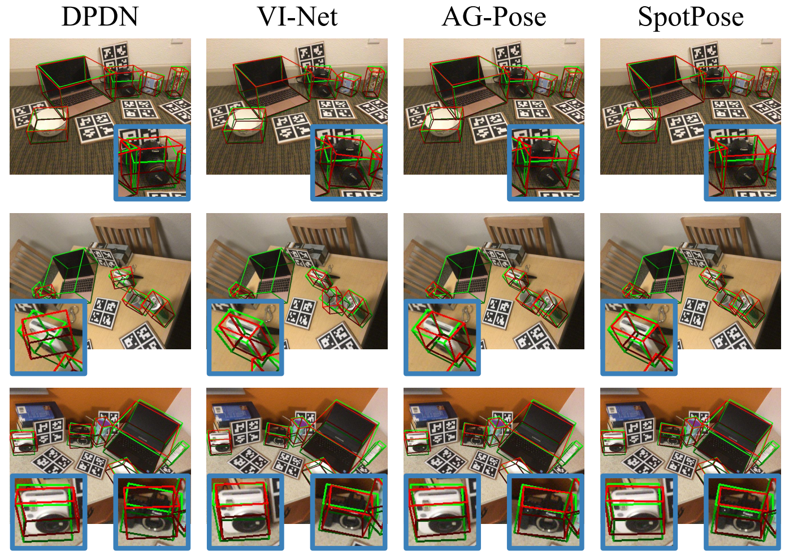

Category-level object pose estimation aims to determine the pose and size of arbitrary objects within given categories. Existing two-stage correspondence-based methods first establish correspondences between camera and object coordinates, and then acquire the object pose using a pose fitting algorithm. In this paper, we conduct a comprehensive analysis of this paradigm and introduce two crucial essentials: 1) shape-sensitive and pose-invariant feature extraction for accurate correspondence prediction, and 2) outlier correspondence removal for robust pose fitting. Based on these insights, we propose a simple yet effective correspondence-based method called SpotPose, which includes two stages. During the correspondence prediction stage, pose-invariant geometric structure of objects is thoroughly exploited to facilitate shape-sensitive holistic interaction among keypoint-wise features. During the pose fitting stage, outlier scores of correspondences are explicitly predicted to facilitate efficient identification and removal of outliers. Experimental results on CAMERA25, REAL275 and HouseCat6D benchmarks demonstrate that the proposed SpotPose outperforms state-of-the-art approaches by a large margin.



@inproceedings{cvpr2025spotpose,
title={Rethinking Correspondence-based Category-Level Object Pose Estimation},
author={Ren, Huan and Yang, Wenfei and Zhang, Shifeng and Zhang, Tianzhu},
booktitle={Proceedings of the IEEE/CVF Conference on Computer Vision and Pattern Recognition (CVPR)},
year={2025}
}